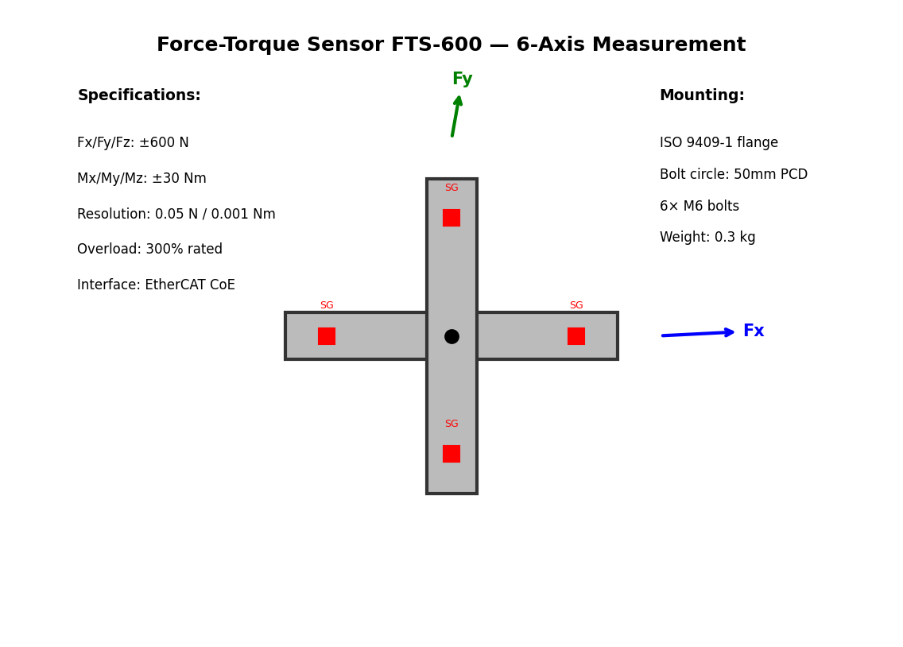
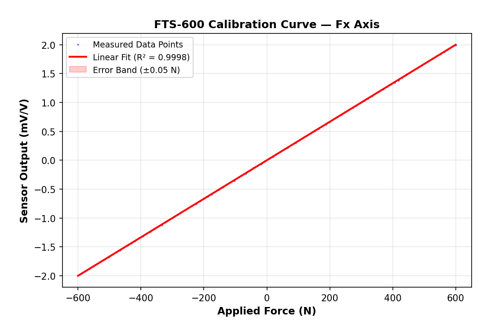
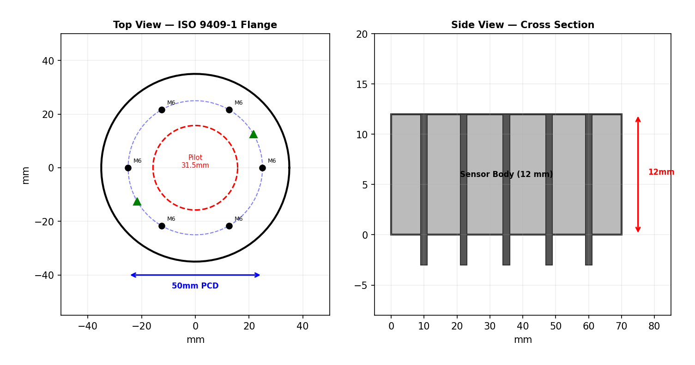

This document provides the complete technical specification for the Contoso Robotics Force-Torque Sensor FTS-600, a high-precision 6-axis force and torque measurement device designed for integration with the CoBot Pro 500 and CoBot Pro 700 collaborative robots. The FTS-600 enables advanced applications including adaptive force control, polishing, insertion tasks, and collision detection refinement. For troubleshooting sensor-related error codes, refer to the Joint Error Troubleshooting Guide in the Support documentation. For sensor maintenance intervals and calibration schedules, see the Preventive Maintenance Schedule in the Support documentation.

The FTS-600 is a monolithic 6-axis force-torque sensor based on silicon strain gauge technology. Unlike foil gauges, silicon strain gauges provide approximately 50× higher gauge factor (GF ≈ 130 vs. GF ≈ 2 for foil), enabling superior resolution without signal amplification noise. The sensor body is machined from a single block of 17-4 PH stainless steel with four instrumented flexural beams arranged in a Maltese cross configuration, providing full 6-DOF measurement (Fx, Fy, Fz, Tx, Ty, Tz).
| Parameter | Fx / Fy | Fz | Tx / Ty | Tz |
|---|---|---|---|---|
| Measurement Range | ±600 N | ±1200 N | ±30 Nm | ±30 Nm |
| Resolution | 0.05 N | 0.10 N | 0.002 Nm | 0.002 Nm |
| Accuracy (% of full scale) | ±0.5% | ±0.5% | ±0.5% | ±0.5% |
| Overload Capacity | 6000 N | 12000 N | 300 Nm | 300 Nm |
| Stiffness | 12.5 kN/µm | 25.0 kN/µm | 6.8 kNm/rad | 6.8 kNm/rad |
| Resonant Frequency | ≥ 1500 Hz (unloaded) | |||
| Parameter | Value |
|---|---|
| Output Data Rate | 4 kHz (configurable: 1 kHz, 2 kHz, 4 kHz) |
| ADC Resolution | 24-bit sigma-delta |
| Communication Interface | EtherCAT CoE (ETG.6010) |
| Supply Voltage | 24 VDC ± 10% via EtherCAT power |
| Power Consumption | 2.5 W typical |
| Operating Temperature | 0°C to 60°C |
| Temperature Drift (Zero) | ≤ 0.05% FS/°C |
| Temperature Drift (Sensitivity) | ≤ 0.02% FS/°C |
| Ingress Protection | IP67 |
| Weight | 0.45 kg |
| Diameter × Height | 75 mm × 33.5 mm |

Each FTS-600 is factory-calibrated using a NIST-traceable multi-axis calibration fixture. The calibration process consists of the following steps:
Users can perform a simplified two-point field recalibration through the CoBot OS v4.2 calibration wizard (Settings → Sensors → FTS-600 → Calibrate). This corrects zero drift caused by thermal cycling or mechanical wear. The procedure takes approximately 5 minutes and requires removing all loads from the end-effector. Full multi-point recalibration requires return to a Contoso Robotics service center or use of a certified calibration fixture (part number CAL-FTS-600-KIT).

The FTS-600 mounts between the CoBot Pro Joint 6 output flange (robot side) and the end-effector (tool side) using the ISO 9409-1-50-4-M6 standard interface:
When mounting, ensure the sensor cable exits at the 3 o'clock position (viewed from the tool side) and is routed through the cable management clip provided. Do not bend the cable below a 30 mm radius to avoid damaging the shielded twisted-pair conductors inside.
The FTS-600's internal signal conditioning chain consists of:
The FTS-600 communicates over EtherCAT using the CANopen over EtherCAT (CoE) protocol. It implements the following object dictionary entries:
| Index | Sub-Index | Name | Data Type | Access |
|---|---|---|---|---|
| 0x6000 | 01–06 | Force/Torque Readings (Fx, Fy, Fz, Tx, Ty, Tz) | INT32 (0.001 N / 0.0001 Nm) | RO (PDO mapped) |
| 0x6100 | 01 | Output Data Rate | UINT16 (Hz) | RW (SDO) |
| 0x6100 | 02 | Zero Command | UINT8 (write 1 to zero) | WO (SDO) |
| 0x6100 | 03 | Digital Filter Cutoff | UINT16 (Hz) | RW (SDO) |
| 0x6200 | 01–36 | Calibration Matrix (6×6) | FLOAT32 | RO (SDO) |
| 0x6300 | 01 | Sensor Status | UINT16 (bitfield) | RO (PDO mapped) |
| 0x6300 | 02 | Internal Temperature | INT16 (0.1 °C) | RO (SDO) |
Process Data Objects (PDOs) for the 6 force/torque channels and the status word are transmitted every EtherCAT cycle (1 ms default). Service Data Objects (SDOs) are used for configuration, calibration readback, and diagnostics access via the EtherCAT mailbox protocol. For details on the EtherCAT bus configuration, refer to the EtherCAT Communication Stack Specification in the Engineering documentation.
Document version 2.3.1 | Last updated: 2025-01-10 | Contoso Robotics Engineering — Sensor Team